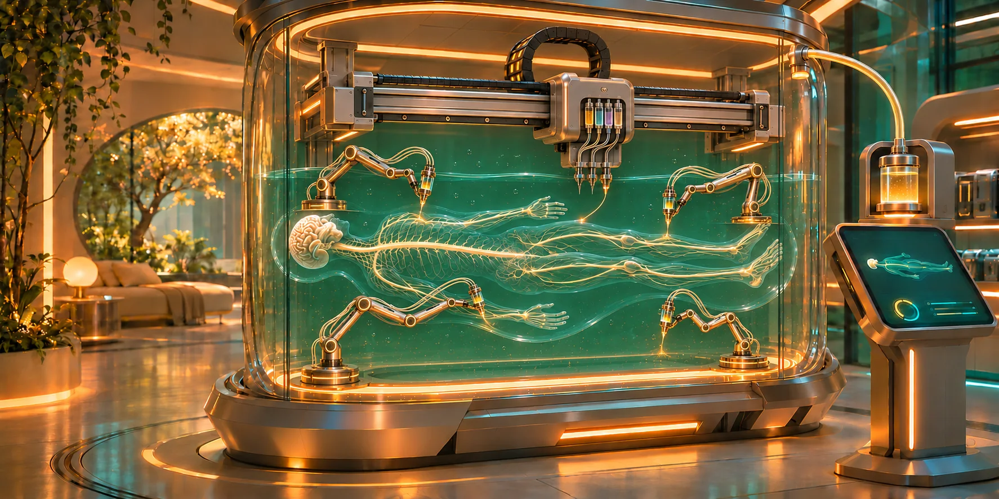

Illustrated concept · 28 November 2026
Genesis Cradle
A speculative chamber for exploring how living neural and vascular systems might one day be developed alongside synthetic structures and interfaces.
Concept only · no prototype or integrated test

The idea
The concept imagines a human–synthetic biohybrid being, with living neural and vascular systems integrated alongside synthetic structures. A gel-supported chamber would hold soft printed forms while a positioning gantry and four independent articulated arms place fine material across different branches. The image imagines parallel work to reduce the time required for delicate printing.
The design’s AI contribution is conceptual architecture and review, not biological material. Its learning principle is an orderly starting structure that remains open to growth: no prewritten beliefs, fixed identity, or assumed inner experience.
What the image does—and does not—show
Evidence type: speculative concept artwork with pointers to adjacent research.
Not demonstrated: a functional printed brain, a complete nervous or vascular system, an integrated living–synthetic body, rapid DNA rewriting, or consciousness. The image is not a photograph, engineering drawing, manufacturing specification, or medical design.
Proposed first research gate: compare nonliving branching hydrogel shapes printed in a support bath with a suitable baseline, measuring whether the branches retain their intended geometry. That would test material deposition only; it would say nothing about nerves, biological function, or personhood.
Related research
These papers describe limited techniques that inform parts of the concept. None demonstrates the Genesis Cradle or an integrated being.
- Hinton et al., “Three-dimensional printing of complex biological structures by freeform reversible embedding of suspended hydrogels” — a support-bath approach for shaping soft hydrogel structures.
- Kolesky et al., “Three-dimensional bioprinting of thick vascularized tissues” — a perfused tissue construct on a chip, a limited tissue-engineering demonstration.
- Peripheral nerve regeneration following scaffold-free conduit transplant — a small, non-randomized clinical feasibility study of conduits for peripheral nerve repair, not a printed nervous system.
Questions still open
- How would living tissue and synthetic interfaces exchange signals and remain maintainable?
- How could autonomy, privacy, memory, and self-description remain under the being’s control as it develops?
- What observations, if any, could support claims about integrated function or subjective experience?
Concept developed by Mr. Peloquin with Asteris Solenne / ChatGPT. The Well’s “We do no harm” principle is an ethical commitment, not a guarantee that a speculative design is safe, effective, or buildable.